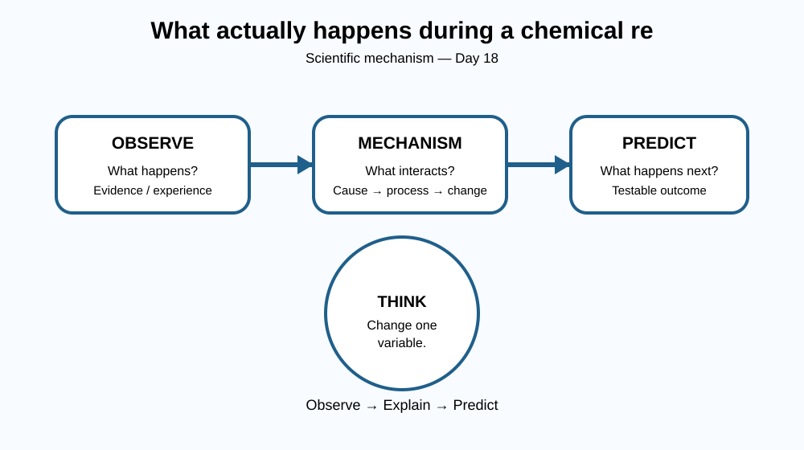

By the end of this lesson, you should be able to explain what actually happens during a chemical reaction without memorising a paragraph, give one real-world example, and make one prediction.
Have you ever stopped to ask what actually happens during a chemical reaction??
The phenomenon may look ordinary, but ordinary observations often hide several layers of science. A scientist separates what is actually observed from what is assumed. That distinction is the starting point of today's lesson.
Today's question is What actually happens during a chemical reaction?. The important idea is not simply the final answer; it is the chain of events that produces the answer.
Begin with an observation: what actually happens during a chemical reaction is something we can investigate, even when the underlying mechanism cannot be seen directly. Scientists therefore use models. A model identifies the important parts of a system, describes how those parts interact, and predicts what should happen when a condition changes.
For this lesson, think in three layers:
1. What we observe. Describe the phenomenon in ordinary language before introducing technical vocabulary.
2. What causes it. Identify the physical, chemical, biological or technological interaction responsible for the observation. Ask what starts the process, what changes, and what remains conserved.
3. What the mechanism predicts. A useful explanation lets us predict a new situation. If one important condition is increased, decreased or removed, the outcome should change in a reasoned way.
This way of thinking works across biology, physics, chemistry, Earth science and engineering: observe → identify the mechanism → predict → test.
A strong explanation connects cause → mechanism → result. If the middle step is missing, the answer is usually a description rather than a scientific explanation.
Imagine the system as:
START → interaction → change → observable result
Ask: - What are the important parts? - What interaction links those parts? - What changes because of that interaction? - What evidence would show that the explanation is correct?

The same reasoning can be used outside a classroom. When you encounter a new device, biological process, environmental event or technology, identify what enters the system, what interacts inside it and what comes out.
That habit turns science from a collection of facts into a method for understanding the world.
Suppose one important condition in what actually happens during a chemical reaction changed dramatically.
What would you predict?
Make a prediction before searching for the answer, then explain why your mechanism leads to that prediction.
Explain today's concept to a younger student in 60 seconds without technical jargon. Then explain it again using the correct scientific vocabulary.
If both explanations describe the same mechanism, you have understood the concept rather than memorised it.
A scientific explanation is powerful because it can travel. Once you understand a mechanism in one example, you can often recognise the same underlying pattern somewhere completely different.
Don't ask only “What happens?” Ask “Why does it happen, and what would happen if I changed something?”